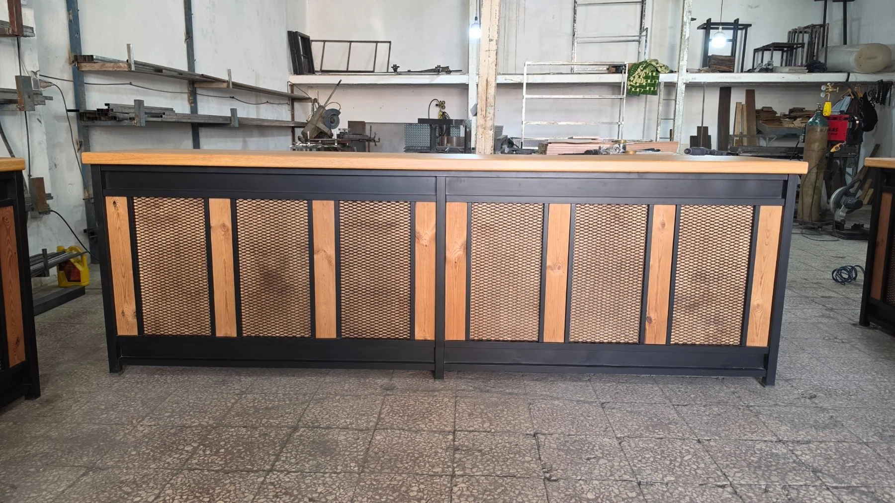

WORKSHOP COUNTER / پروژه اجراشده
نگاهی نزدیکتر به کانتر کارگاهی
این تصویر نما و ابعاد کلی یک نمونه ساختهشده را در محیط کارگاه نشان میدهد. برای سفارش مشابه، ابعاد و محل نصب بررسی میشود.
- دستهبندی
- کانتر
- نوع محتوا
- عکس واقعی محصول
- ابعاد، قیمت و زمان ساخت
- قابل استعلام
برای سفارش محصول مشابه، میتوانید عکس این نمونهکار را به همراه توضیحات خود برای بررسی در کارگاه ارسال کنید.
آمادهسازی درخواست